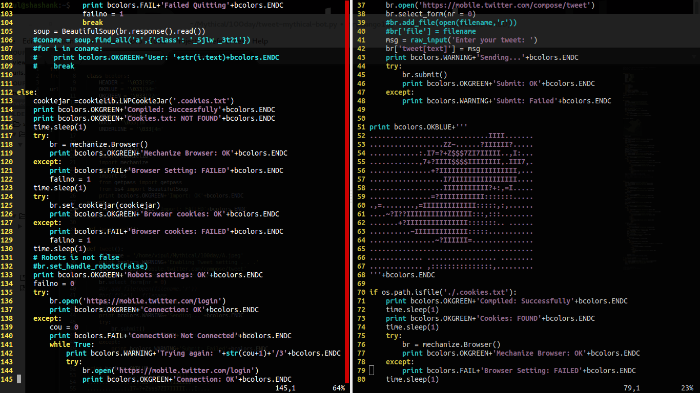

Part of #100DaysOfCode
-
Python Updates 7/2/17
- Program is live
- Test cases added in program
- @BotMythical user created
- Mythical tweet program created
- Simple tweet program created
-
Website Updates 7/2/17
- Webpage created
Part of #100DaysOfCode
|  | And interesting part is that it works without using Twitter API. Yes, it works all by scraping and gathering information.
git clone https://github.com/shashank-sharma/mythical-bot-twitter |
|---|
Screenshot |
|---|